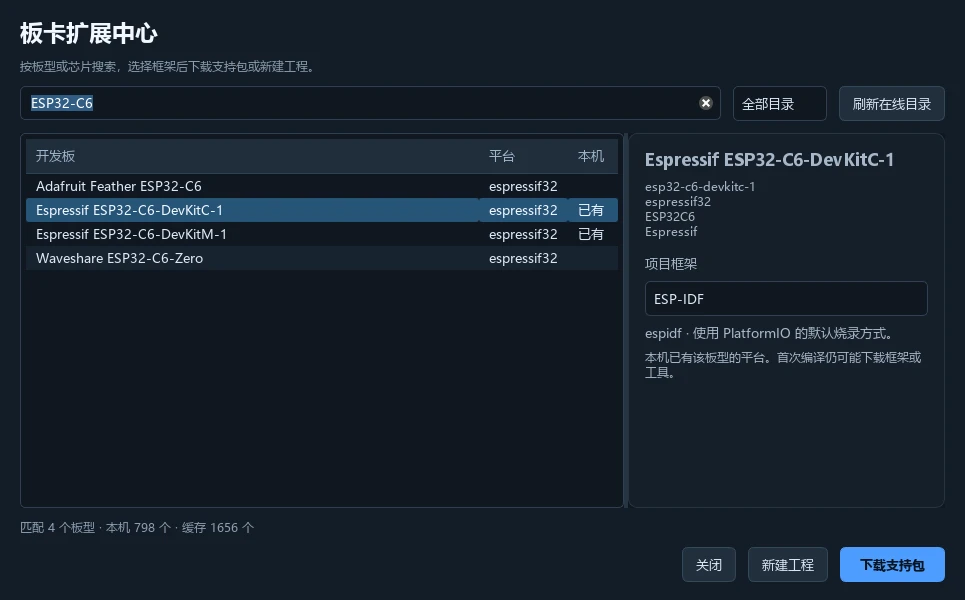

1.3新版
可搜索的 PlatformIO 开发板目录
按开发板和框架下载工具链，创建工程。可按本机平台筛选，离线时可浏览已缓存的目录。
WINDOWS 嵌入式 IDE
QYS RTOS 1.3 · 最新版本
嵌入式开发工作台
在 Windows 上打开 Zephyr 或 PlatformIO 工程。按板型下载支持包，在同一个界面编辑代码、编译、烧录和查看串口。

以下为补充说明用的 CSS 示意，开发板家族与文案仅用于演示信息层级。
RELEASES
选择适合的 Windows 安装包。1.3 为当前新版，1.2 和 1.1 为历史版本。
按开发板和框架下载工具链，创建工程。可按本机平台筛选，离线时可浏览已缓存的目录。
增加 ESP32-S3、STM32F103C8T6、STC89C52RC 三个工程模板，并提供独立的 PlatformIO 编译与烧录流程。
提供 Zephyr 工程、设备树辅助和串口监视，并可自行配置兼容的第三方 AI 模型。
各版本安装包由 GitHub Releases 提供。SDK、工具链和板卡支持内容按目标板及选定框架下载，具体要求以实际环境为准。
QYS RTOS 1.3 · PLATFORMIO
搜索 PlatformIO 开发板目录，按目标板和框架准备 SDK 与工具链，然后从选中的开发板建立工程。板卡扩展中心让环境准备从第一步就跟着项目走。
按名称查找开发板，也可筛选本机已有的平台支持。
根据目标板与框架下载所需 SDK、工具链和板卡支持内容。
从所选板卡创建工程，在工作台中编译、烧录和查看串口。
可用板卡范围取决于 PlatformIO 官方目录与当前 Zephyr 环境。驱动、烧录工具和探针要求因开发板而异。
ONE WORKBENCH, TWO FLOWS
按项目选择 RTOS 工程或普通单片机工程，常用开发动作留在熟悉的桌面环境里。
创建或打开 Zephyr 项目，编辑代码，调用 west 编译与烧录，并在需要时查看设备树和串口输出。
使用 PlatformIO 创建或打开工程，选择构建环境后进行独立的编译与烧录。
OPEN SOURCE · WINDOWS IDE